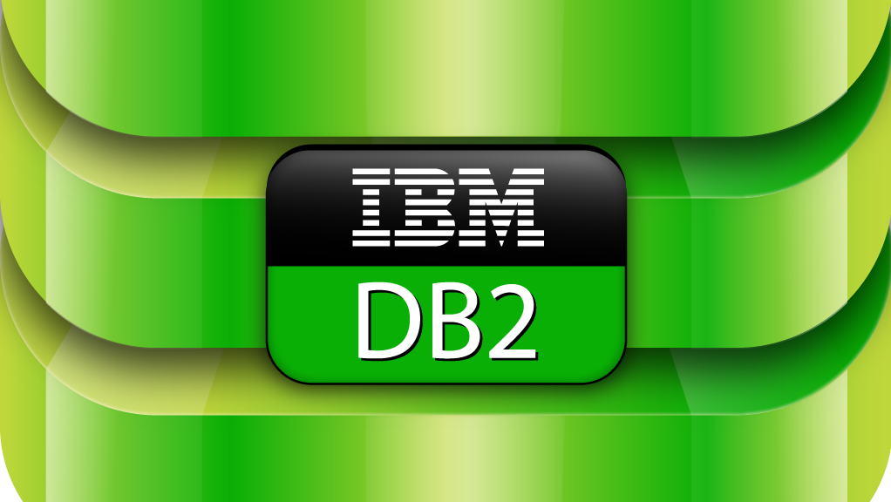

<div id="body" class="bd-example">
  <div id="myCarousel" class="carousel slide" data-ride="carousel">
    <ol class="carousel-indicators">
      <li data-target="#myCarousel" data-slide-to="0"></li>
      <li data-target="#myCarousel" data-slide-to="1" class="active"></li>
      <li data-target="#myCarousel" data-slide-to="2"></li>
      <li data-target="#myCarousel" data-slide-to="3"></li>
    </ol>
    <div class="carousel-inner">
      <div class="carousel-item">
        
        <div class="carousel-caption d-none d-md-block">
          <h4><b> Angular 7 </b></h4>
          <p><b> JavaScript - фреймворк с открытым исходным кодом, обеспечивающий все необходимое для создания клиентской логики вашего приложения. !Front-end! </b></p>  
        </div>
      </div>
      <div class="carousel-item active">
        
        <div class="carousel-caption d-none d-md-block">
          <p><b> Фреймворк Bootstrap 4 — это свободный набор инструментов для создания интерфейсов сайтов и веб-приложений. !Front-end! </b></p>
        </div>
      </div>
      <div class="carousel-item">
        
        <div class="carousel-caption d-none d-md-block">
          <p><b> Java — сильно типизированный объектно-ориентированный язык программирования, разработанный компанией Sun Microsystems (в последующем приобретённой компанией Oracle). !Back-end! </b></p>
        </div>
      </div>
      <div class="carousel-item">
          
          <div class="carousel-caption d-none d-md-block">
            <p><b> DB2 — семейство систем управления реляционными базами данных, выпускаемых корпорацией IBM. Чаще всего, ссылаясь на DB2, имеют в виду реляционную систему управления базами данных DB2 Universal Database (DB2 UDB). !DataBase! </b></p>
          </div>
      </div>
    </div>
    <a class="carousel-control-prev" href="#myCarousel" role="button" data-slide="prev">
      <span class="carousel-control-prev-icon" aria-hidden="true"></span>
      <span class="sr-only">Previous</span>
    </a>
    <a class="carousel-control-next" href="#myCarousel" role="button" data-slide="next">
      <span class="carousel-control-next-icon" aria-hidden="true"></span>
      <span class="sr-only">Next</span>
    </a>
  </div>
</div>